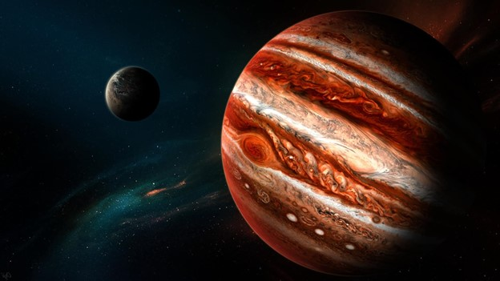

Юпитер
Иногда про Юпитер говорят, что это своего рода недозвезда. На самом деле Юпитеру очень далеко до звезды — ему нужно стать примерно в 80 раз более массивным. Но на звезду он немного похож своим составом из водорода и гелия. Юпитер массивней, чем все остальные планеты, астероиды, пыль, мусор, кометы в Солнечной системе вместе взятые.
Вернуться на главную